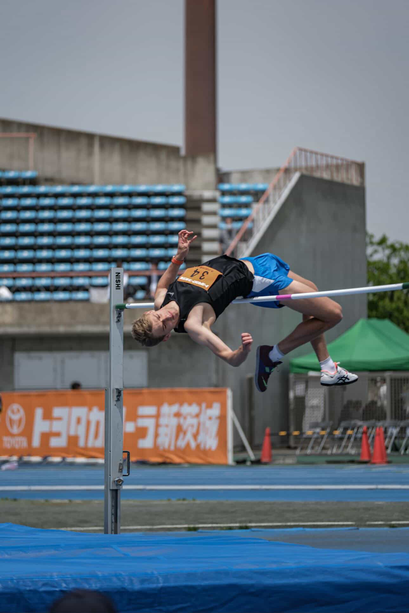
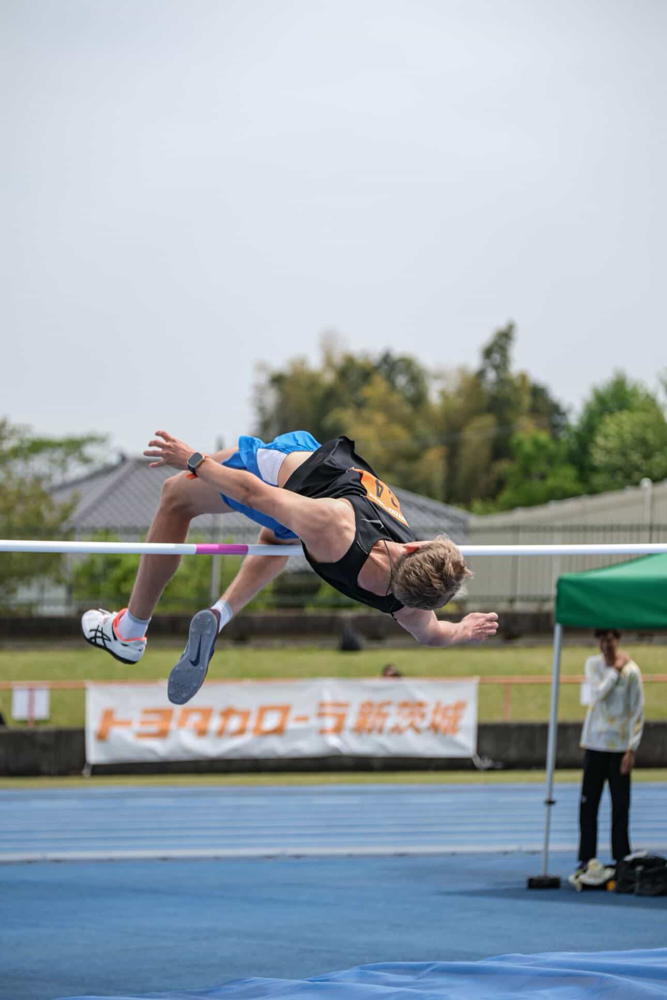
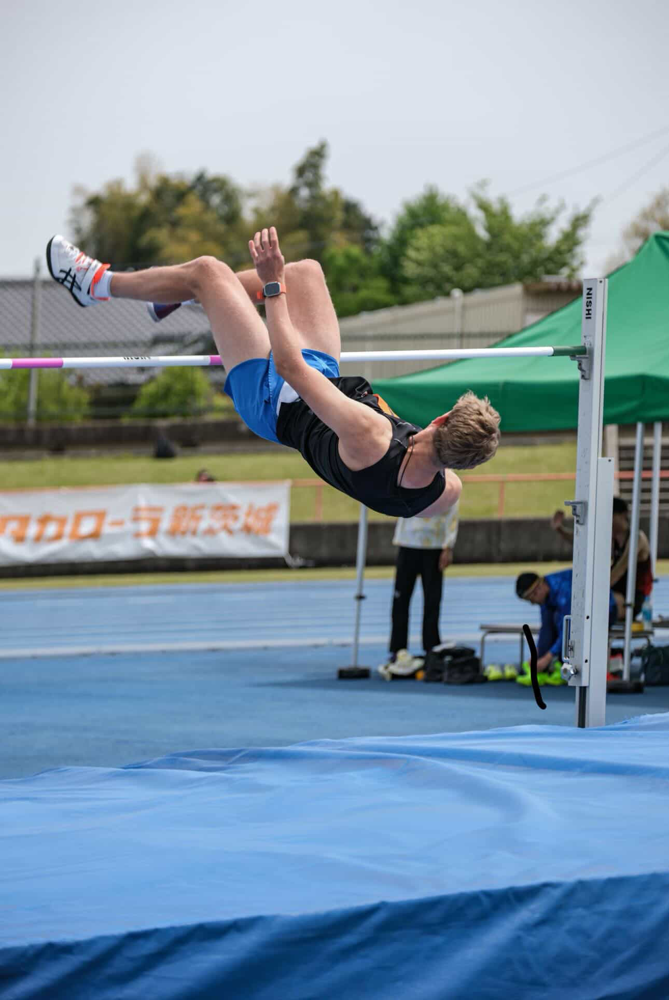

トレーニング · Gallery · Галерея
IN ACTION
GALLERY
 ↗ View
↗ View ↗ View
↗ View ↗ View
↗ View ↗ View
↗ View ↗ View
↗ View ↗ View
↗ View ↗ View
↗ View ↗ View
↗ View ↗ View
↗ View ↗ View
↗ View ↗ View
↗ View ↗ View
↗ View ↗ View
↗ View ↗ View
↗ View ↗ View
↗ View ↗ View
↗ View ↗ View
↗ View ↗ View
↗ View ↗ View
↗ View ↗ View
↗ View ↗ View
↗ View ↗ View
↗ View ↗ View
↗ Viewスケジュール · Schedule · Расписание
陸上競技場（織田フィールド）
Competition-grade athletics track — reserved for the first Sunday of every month. A performance environment that matches the intensity of our training.
Open in Maps代々木公園
Tokyo's iconic open-air park — our regular weekly training ground. All Sundays except the first. Fresh air, open space, consistent routine.
Open in Maps


コーチについて · About the Coach
Мастер спорта · Track & Field Athlete & Coach
陸上競技選手・コーチ
With 18 years in track & field and 7 years of dedicated coaching, Arsentii brings elite athletic experience to young athletes in Tokyo. He works with students from ASIG, TAC, and TIS, as well as private clients — applying a highly individualised approach to every athlete he trains.
"Performance is not случайность — it is engineered."
プログラム · The Program
科学的なトレーニングで子供たちの可能性を引き出す
ランニング・スプリント
Stride mechanics, acceleration, and sprint form built from the ground up — with results from the very first session.
跳躍技術・走高跳
High jump and long jump coaching with technical precision — personal records achieved through structured, progressive training.
バドミントン・ラグビー
Team sport development combining agility, coordination, and competitive mindset — building athletes who excel in multiple disciplines.
プライベートコーチング
One-on-one sessions for kids and adults. Full individual attention, personalised strategy, and accelerated results.
Proven Results · 実績
400m sprint improved in 3 months1:25 → 1:05
School record broken at ASIGStanding for 17 years
High jump personal recordAchieved in the first session
Fastest 6th grader in school historynextgen.running athlete
トレーニング · Gallery · Галерея
↗ View↗ View↗ View↗ View↗ View↗ View↗ View↗ View↗ View↗ View↗ View↗ View↗ View↗ View↗ View↗ View↗ View↗ View↗ View↗ View↗ View↗ View↗ ViewWe work with
JAAF START · Club ID: 518
Official Status · 公式登録
Next Gen Athletics Club is now officially registered in the JAAF START system. Our athletes can compete in official track & field competitions and have their results formally recognized — entering the arena of real performance.
How to Register · 登録方法
ブログ · Blog · Блог
Training insights, competition updates, and athlete stories.
You don't need the most expensive shoes to start running well. We break down what actually matters — comfort, fit, foot type, cushioning — and recommend beginner-friendly models from Asics, Nike, Adidas, New Balance, and Hoka.
Read moreMost coaches focus on speed — we focus on the architecture behind it. Proper stride mechanics, arm drive, and foot strike patterns are the foundation of every fast athlete, regardless of age or discipline.
Read moreOne of our athletes achieved a high jump personal record in their very first coached session. Not luck — methodology. Here is how we approach technique introduction with beginners to unlock immediate results.
Read moreGear Reviews · シューズレビュー · Обзоры кроссовок
Tested on the track. Recommended by Arsentii for young athletes training in Tokyo.
Responsive, stable, and built for repetition. The Gel-DS handles sprint drills, track intervals, and competition warm-ups without complaint. Exceptional energy return for the price — our most-recommended all-rounder for young athletes just stepping up their training volume.
The Pegasus is a workhorse — durable, cushioned, and versatile enough for track days, field sessions, and multi-sport training alike. Kids grow into it fast. Slightly heavier than a pure speed shoe, but the support makes it ideal for athletes still developing their gait patterns.
Lightweight and fast — the Adizero SL is what you lace up when the race matters. Minimal stack height means athletes feel the track directly, which accelerates proprioceptive development. Not for every training session, but unbeatable for time trials and official meets.
Maximum cushion, zero compromise on bounce. The FuelCell Rebel absorbs the load on recovery days so athletes come back fresher. Wide toe box makes it particularly well-suited for kids whose feet are still widening. A strong second shoe for any serious young athlete's rotation.
Записаться · Apply Now · 今すぐ参加
This is not массовый спорт. This is intentional development — for those who value quality, results, and long-term growth.
インスタグラム · Instagram · Инстаграм